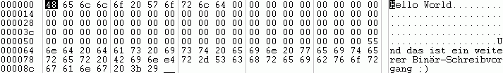

Dateien lesen und schreiben
Um Dateien in RapidBATCH zu verarbeiten, stellt Ihnen RapidBATCH vier vielseitig anwendbare Anweisungen und Funktionen zur Verfügung. Mit Hilfe dieser Anweisungen und Funktionen können Sie sowohl Textdateien als auch binäre Dateien lesen und schreiben.
Um Daten in eine Textdatei zu schreiben, bietet RapidBATCH die Anweisung WRITEFILE. WRITEFILE erwartet als Parameter einen Dateinamen sowie den zu schreibenden Text (also die zu schreibenden Daten).
Einfachstes Fallbeispiel:
writefile 'hello.txt', 'Dies ist ein einfacher Text in einer Textdatei!'
WRITEFILE erweitert bei jedem Aufruf den Inhalt einer Datei, falls diese schon existiert, d.h. der zu schreibende Wert wird an das Ende der Datei angehängt. Ein Zeilenumbruch je WRITEFILE-Aufruf geschieht in der Datei automatisch. Existiert die zu schreibende Datei noch nicht, wird sie neu erstellt und der entsprechende Wert in die erste Zeile geschrieben.
Führen wir also den folgenden Code aus:
writefile 'test.txt', 'Das ist ein Test!'
writefile 'test.txt', 'Und jetzt sind wir in der zweiten Zeile!'
writefile 'test.txt', 'So denn! Das ist das Ende der Datei.'
so erhält die resultierende Datei TEST.TXT folgenden Inhalt:
Das ist ein Test!
Und jetzt sind wir in der zweiten Zeile!
So denn! Das ist das Ende der Datei.
Wollen wir nun die Datei wieder auslesen, verwenden wir die Funktion READFILE. READFILE ist ebenfalls nur zum Lesen von Textdateien geeignet, da sie eine Datei zeilenweise ausliest. Parameter sind der Dateiname der zu lesenden Datei sowie eine Zeilenangabe. Rückgabewert ist der Inhalt der angeforderten Zeile.
Folgendes Script liest die erste Zeile unserer gerade erstellten TEST.TXT aus.
readfile [zeile] = 'test.txt', '1'
echo 'Erste Zeile von TEST.TXT: ' # [zeile]
Wollen wir die Datei nun komplett Zeile-für-Zeile lesen, ist ein so genannter Zeilen-Zähler notwendig. Wir verwenden hier die Variable [i]. Wird bei READFILE eine Zeile angefordert, die nicht mehr existiert, so ist der Rückgabewert der Funktion der Wert "EOF", was soviel bedeutet wie "End Of File". Die Abbruchbedingung für unsere Ausleseschleife ist also der Vergleich, ob [zeile] den Wert 'EOF' erhält, womit wir nun folgendes Script erhalten:
[i] = '0'
repeat
rem [i] inkrementieren (erhöhen)
[i] + '1'
rem Zeile [i] lesen
readfile [zeile] = 'test.txt', [i]
rem Ausgabe der Zeile
echo 'Inhalt von Zeile ' # [i] # ': ' # [zeile]
until [zeile] = 'EOF'
READFILE kann auch eine Datei "in einem Rutsch" einlesen, also die komplette Textdatei zurückgeben. Diesen Effekt erhält man, wenn man als Zeilenindex eine Zahl kleiner oder gleich '0' angibt. Folgendes Script zeigt uns also direkt den Inhalt der Datei TEST.TXT an.
readfile [datei] = 'test.txt', '0'
echo 'Inhalt von TEST.TXT:' # [new_line] # [new_line] # [datei]
Wir verwenden im obigen Script ausserdem die vordeklarierte Variable [new_line], um jeweils einen Zeilenumbruch im ECHO-Meldungsfenster zu erzeugen.
Sowohl bei READFILE als auch bei WRITEFILE kann durch Überprüfung der Variablen [errorcode] geprüft werden, ob die jeweilige Aktion erfolgreich war oder nicht. Die Vorgehensweise ist dieselbe wie bei den bisher besprochenenen Anwendungsfällen für [errorcode], '-1' bei einem Fehler (z.B. bei READFILE, wenn EOF eintritt oder die Datei nicht existiert, '0' bei erfolgreicher Durchführung.
Neben dem Schreiben und Lesen von Textdateien ist es in RapidBATCH 5 auch erstmals möglich, Binärdateien zu bearbeiten. Als Binärdateien definiert man alle Dateien, die keine direkten Textdateien sind. Selbst Office-Dateien wie .XLS oder .DOC sind KEINE Textdateien.
Wir werden in diesen Beispielen hier auch nur lesbare Texte in die Binärdateien schreiben, es können aber auch beliebige Sonder- und Steuerzeichen in die Binärdateien geschrieben werden.
Um eine Datei (es kann auch eine Textdatei sein!) binär zu schreiben, bietet RapidBATCH die Anweisung PUTFILE. Wenn man mit PUTFILE in eine nicht existierende Datei schreiben will, schlägt dies fehl, daher MUSS die Datei vorher mit NEWFILE explizit erzeugt werden. Folgendes Beispiel schreibt den Text "Hello World" binär in eine Datei BINARY.TXT. Neben dem Dateinamen und dem zu schreibenden Wert muss bei PUTFILE als zweiter Parameter der Byte-Offset, wo der Text in die Datei eingefügt werden soll, angegeben werden. Als Offset bezeichnet man die Position eines Zeichens ab dem Anfang der Datei. Da unsere Datei leer ist, beginnen wir also bei Offset 1. Es ist also das erste Byte der Datei. Die Zeichen, die binär in die Datei geschrieben werden, werden nicht im Klartext angegeben, sondern als Liste von ASCII-Zeichencodes der zu schreibenden ASCII-Zeichen, in der jeder Wert durch das bereits bekannte Standard-Separatorzeichen, welches über die Variable [std_sep] definiert werden kann, getrennt ist. Wie bereits bekannt sein sollte ist dies im Normalfall das Pipe-Zeichen "|".
newfile 'binary.txt'
putfile 'binary.txt', '1', '72|101|108|108|111|32|87|111|114|108|100'
open 'binary.txt'
In diesem Fall haben wir gerade 11 Byte in die Datei eingefügt, also 11 ASCII-Zeichen.Wir könnten jetzt auch beispielsweise direkt an Byte-Position 100 mit dem Schreiben der Datei fortfahren:
rem Text: "Und dies ist ein weiterer"
[text] = '85|110|100|32|100|97|115|32'
[text] # '|105|115|116|32|101|105|110|32'
[text] # '|119|101|105|116|101|114|101|114'
putfile 'binary.txt', '100', [text]
rem Text: "Binär-Schreibvorgang ;)"
[text] = '32|66|105|110|228|114|45|83|99'
[text] # '|104|114|101|105|98|118|111'
[text] # '|114|103|97|110|103|32|59|41'
rem Da wir jetzt 24 Zeichen geschrieben haben,
rem müssen wir ab Pos 100 + 24 weiterschreiben
putfile 'binary.txt', '100' + '24', [text]
Diese Zeilen und Mengen an ASCII-Codewerten mögen vielleich im ersten Moment etwas chaotisch aussehen, da wir hier auf reiner RapidBATCH-Sprachbasis arbeiten. Wenn Sie später die Binärfunktionen produktiv einsetzen wollen ist es natürlich ratsam, sich entsprechende Hilfsfunktionen zu programmieren, die einem die Arbeit erheblich sparen können und sich völlig individuell an die entsprechenden Einsatzumgebungen abändern lassen.
Wenn wir nun zusätzlich auch obige Zeilen ausgeführt haben, sieht die Datei, wenn man sie in einem HEX-Editor betrachtet, so aus:

Inhalt der Datei BINARY.TXT in einem Hex-Editor
Deutlich zu sehen ist, dass unser zweiter, binärer Schreibvorgang bei Hex-Offset 64 beginnt, also Dezimal der Offset 100. Der Bereich zwischen unserem "Hello World" und dem Text "Und das ist ein weiterer Binär-Schreibvorgang ;)" wird mit dem ASCII-Zeichencode 0 aufgefüllt, was soviel heiflt wie "nichts" (NUL).
Wenn Sie mit PUTFILE in eine bestehende Datei schreiben, werden alle Zeichen, die Sie an einer bestimmten Byteposition angeben, einfach in die Datei geschrieben, d.h. vorhandene Zeichen werden einfach überschrieben. Es erfolgt also kein append (Anhängen von Daten), denn dies wäre ja für binäre Dateiverarbeitung nicht angebracht, bzw. ohne gröfleren Sinn (Dateien werden ja automatisch erweitert, wenn Daten über das Dateiende hinaus geschrieben wurden, wie wir es im obigen Beispiel gemacht haben).
Das Auslesen einer Binärdatei funktioniert so ähnlich wie das Schreiben - hierzu benutzen wir gegensätzlich zu PUTFILE die Funktion GETFILE. GETFILE erwartet als Funktionsparameter den Pfad der zu lesenden Datei, den Anfangs-Offset sowie die Anzahl der Bytes, die vom Anfangs-Offset aus gelesen werden. Wenden wir nun GETFILE auf unsere im obigen Beispiel erstellte Datei BINARY.TXT an. Zu beachten sei auch hier, dass die Rückgabe von GETFILE eine Liste an ASCII-Codes ist, die wir zuerst wieder mit der Funktion GETCHR zu entsprechenden Zeichen umwandeln müssen, was aber kein gröfleres Problem darstellt.
rem Daten lesen
getfile [data] = 'binary.txt', '100' + '25', '20'
echo 'Gelesene ASCII-Liste: ' # [data]
rem ASCII-Codes in ASCII-Zeichen umwandeln und an Ausgabestring hängen
[i] = '0'
repeat
[i] + '1'
gettok [zeichen] = [data], [std_sep], [i]
if [zeichen] ! ''
getchr [zeichen] = [zeichen]
[klartext] # [zeichen]
endif
until [zeichen] = ''
rem Den Klartext ausgeben
echo 'Klartext: ' # [klartext]
end
Wir lesen hier den Text "Binär-Schreibvorgang" aus der oben erstellten und geschriebenen Datei. Wir setzen dabei den Start-Offset auf 125 (dort wo der Text anfängt) und lesen von dort aus 20 Zeichen. Ergebnis ist der entsprechende String!
Wenn Sie mit GETFILE über das Dateiende hinaus lesen wollen, wird entweder ein Leerstring oder aber alle Bytes bis zum Dateiende zurückgegeben.
Wozu das alles?
Sicherlich haben Sie sich gefragt, warum wir hier einfache Textdateien binär schreiben. Das ist natürlich nicht der eigentliche Sinn und Zweck von Binärdateien. Sie haben aber mit PUTFILE und GETFILE die volle Kontrolle über eine Datei; Bei READFILE und WRITEFILE werden reine text-basierende Dateien verwaltet, doch mit PUTFILE und GETFILE haben Sie einfach mehr Möglichkeiten, eine Datei zu verarbeiten. Sie stellen sozusagen die "professionelle Alternative" zu WRITEFILE und READFILE dar, welche Sie aber mit höchster Warscheinlichkeit vermehrt bei der Programmierung von Scripts in RapidBATCH einsetzen werden, da WRITEFILE und READFILE für die meisten Anwendungsfälle mehr als ausreichend und natürlich viel einfacher zu handhaben sind.
Copyright © 2000-2006 by J.M.K S.F. Software Technologies, Jan Max Meyer
All rights reserved.